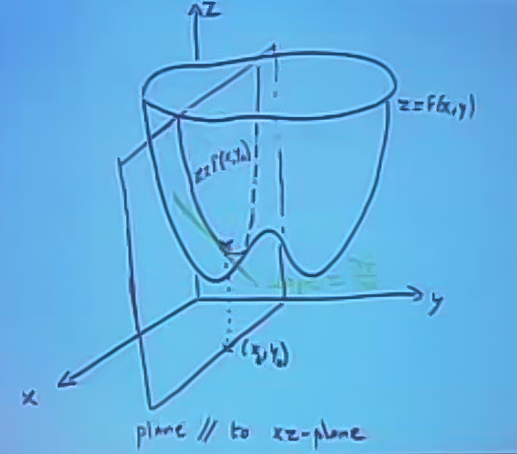
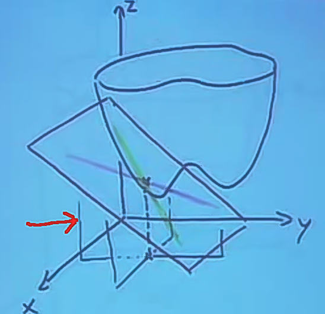
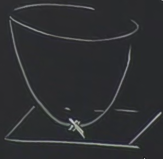
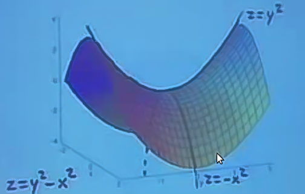
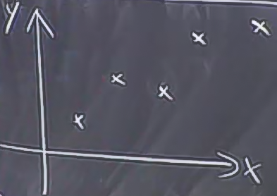
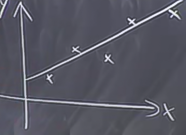
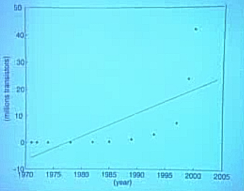
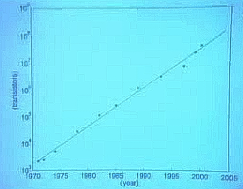

Ders 9
Bu dersin konusu birden fazla değişken içeren fonksiyonların minimizasyonu ile uğraşırken yardımcı olacak kısmi türev (partial derivative) kavramı. Çok değişkenli bir fonksiyon $f(x,y)$'nin birden fazla türevi vardır. Mesela bunlardan bir tanesi
$$ \frac{\partial f}{\partial x} = f_x $$
Bu türev $x$'in değiştirildiği ama $y$'nin sabit tutulduğu bir durumu gösterir.
$$ \frac{\partial f}{\partial y} = f_y $$
işe $y$'in değiştirildiği ama $x$'nin sabit tutulduğu bir durumu gösterir.
Şimdi her ikisinin birden değiştirildiği durumda ne olacağını gösteren yaklaşıksal (approximate) formülü görelim. Değişim matematiksel olarak şöyle
$$ x \sim x + \Delta x $$
$$ y \sim x + \Delta x $$
O zaman $z$ için
$$ z = f(x,y) $$
yaklaşıksal değişim şöyle olur
$$ \Delta z \approx f_x\Delta x + f_y \Delta f_y \qquad (1) $$
Tekrar vurgulamak gerekirse bu yaklaşıksal bir formül, daha "doğru" bir temsil için 2., 3. türevleri içeren daha yüksek dereceden (higher order terms) terimlerin de olması gerekir, fakat bu terimler 1. derece lineer bir yaklaşıksallık için kullanılmaz.
Bu formülü nasıl doğrularız? Bunu yapmanın yollarından biri teğet düzlem yaklaşıksallaması (tangent plane approximation). Mesela $z = f(x,y)$ fonksiyonuna olan teğet bir düzlemi düşünelim.

Hatırlarsak $\frac{\partial f}{\partial x}$ kısmi türevi $x$'in değiştiği ama $y$'nin sabit tutulduğu bir durumu tarif ediyordu. Yukarıdaki grafiğe göre bu bir anlamda iki çukurlu kap gibi duran $z$ fonksiyonun bir kesitine bakmak gibi (unutmayalım, fonksiyon sadece kabın dışında tanımlı, içi boş). Bu kesit üzerine $f$'in bir yansıması oluşuyor, o yansıma üstteki grafikte bir parabol şeklinde. Bu parabolda $x$ değiştikçe o noktanın parabol üzerindeki çizgizel teğeti de değişiyor (grafikteki yeşil çizgi) ki bu çizgisel eğim $\frac{\partial f}{\partial x}$'e eşit.
Eğer aynı şeyi $x$'in sabit $y$'nin değiştiği durum için yapsaydım, benzer bir kesit elde edecektim (resimde kırmızı okun gösterdiği düzlem).

Ve, bu iki kesit üzerinden elde edilen ikinci teğet çizgi birinci ile beraber kullanılınca bir düzlemi tanımlamak için kullanılabilir (iki çizgi paralel bir düzlem tanımlamak için yeterlidir), ki teğet düzlem yaklaşıksallaması için kullanılacak düzlem budur. Üstteki resimde bu yeni düzlem çapraz yatık olarak gözüken düzlem.
Formülsel olarak bunu nasıl yapacağımızı gösterelim.
$f_x$ ve $f_y$ iki teğet çizgiyi tanımlamak için kullanılıyorsa, bu formülleri bir araya koyarak düzlemi temsil edebilirim. Eğer
$$ \frac{\partial f}{\partial x}(x_0,y_0) = a $$
işe bu demektir ki birinci teğet çizgi (yeşil çizgi) $L_1$ şöyledir:
$$ L_1 = \left\{ \begin{array}{l} z = z_0 + a(x - x_0) \\ y = y_0 \end{array} \right. $$
Bu çizgi için $y$'yi sabit tutuyorum, $z$'deki değişimi $z_0$ üstüne eğim $a$'nin katları kadar ($x$'in değişimi oranında çarparak) ekleyerek hesaplıyorum.
Benzer şekilde
$$ \frac{\partial f}{\partial y}(x_0,y_0) = b $$
$$ L_2 = \left\{ \begin{array}{l} z = z_0 + b(y - y_0) \\ y = y_0 \end{array} \right. $$
Hem $L_1$ hem de $L_2$ $z = f(x,y)$'ye teğettir. Bu iki çizgi beraber bir düzlem oluşturur. Bu formül
$$ z = z_0 + a(x-x_0) + b(y-y_0) \qquad (2) $$
formülüdür.
Formül (1), ustteki formülün yaklaşıksal halidir. Eğer teğet düzlem üzerinde olsaydık, $\approx$ işareti $=$ işaretine dönüşecekti. Bu yaklaşıksallık ufak $\Delta x$ ve ufak $\Delta y$ için geçerli. Yani yaklaşıksal formül, $f$'nin grafiği teğet düzleme yakın diyor.
Maksimum Minimum Problemleri
Kısmi türevlerin kullanım alanlarından biri optimizasyon problemleridir. Mesela çok değişkenli bir fonksiyonun maksimumunu bulmak gibi. Eğer fonksiyon tek değişkenli olsaydı, hemen türevini alıp sonucu sıfıra eşitleyebilirdik, ve buna göre bir çözüm arardık. Çok değişkenli fonksiyonlarda kısmı türevler kullanmak lazım.
Bu derste iki değişkenli duruma bakacağız fakat aynı prensipler, 10, 15, milyon tane değişken için aynı.
Lokal bir minimum için hem $f_x=0$ hem $f_y=0$ olmalıdır. Bu niye doğudur? Yine formül (1)'e bakarsak, hem $f_x=0$ hem $f_y=0$ olduğu zaman $\Delta z$ sıfır olacaktır, yani birinci derecede düşünürsek $f(x,y)$'de değişim yok demektir.
Teğet düzlemlerin dilinden konuşursak, minimum anında teğet düzlem tamamen yatay olacaktır.

Formül (2) bağlamında düşünürsek, bu durum $a=0$ ve $b=0$ olduğu ana tekabül ediyor ve o anda düzlemi tanımlayan $z = z_0$ formülüdür.
Tanım
Eğer $f_x(x_0,y_0)= 0$ ve $f_y(x_0,y_0)= 0$ ise o zaman $x_0,y_o$ $f$'in kritik noktasıdır. Not: Birden fazla değişken için tabii ki tüm kısmı türevlerin o noktada sıfır olması gerekir.
Örnek
$$ f(x,y) = x^2 - 2xy + 3y^2 + 2x - 2y $$
Bakalım bunu minimize ya da maksimize edebilecek miyiz?
$$ f_x = 2x - 2y + 2 = 0$$
$$ f_y = -2x + 6y - 2 = 0 $$
Üstteki iki denklemi aynı anda çözmeliyiz.
Bu tür durumlarda iki denklemi birbiriyle toplayıp basitleştirmeye çalışmak iyi bir yöntemdir. Fakat unutmayalım, elimizde her zaman iki tane denklem olmalı, iki denklemi ortadan kaldırıp birdenbire tek denklem ile yola devam edemeyiz.
Toplamı yaparsak
$$ 4y = 0 $$
elde ederiz. Bunu alıp birinci denkleme sokalım, sonuç
$$ 2x + 2 = 0 $$
$$ x = -1 $$
Demek ki kritik nokta $(x,y) = (-1,0)$.
Peki bu kritik noktanın minimum mu maksimum mu olduğunu nereden bileceğiz? Eğer tek değişkenli bir fonksiyona bakıyor olsaydık, ikinci türeve bakabilirdik. Benzer bir şeyi burada da yapabilirdik, ama sadece birinci türevden bile elimizde iki tane var, ikinci türevlerden çok daha fazlası olacak. O duruma bakacağız, şimdilik daha az otomatik olarak işi nasıl anlayacağımızla ilgilenelim.
Elimizde birden fazla minimum olabilir. Türev(lerin) sıfır olduğu noktada bir düzlük vardır, bu bir lokal minimumdur. Yani o noktaya yakın olduğumuz sürece (ki lokallığın tanımı bu) bu minimum geçerlidir. Başka bir noktada, türev(lerin) yine sıfır olduğu ama daha aşağı noktada bir minimum daha olabilirdi. Maksimumlar için aynı durum geçerli.

Yanlız bir diğer seçenek daha var. Bu seçenek kritik noktanın ne maksimum, ne minimum olduğu durumdur. Bu durumda kritik noktadan hangi "yöne doğru" bakıyorsak, değişik bir cevap elde ederiz. Bu at eğeri gibi gözüken grafiğin orta noktasına, 0,0,0 noktasına bakalım, burada teğet düzlem tam yatay. Bu noktaya eğer noktası (saddle point) deniyor. Eğer $z=y^2$ yönüne doğru bakarsak min durumdayız, eğer $z=-x^2$ yönüne doğru bakarsak maks durumdayız.
- türevlerden bahsetmişik, ve bu derste kritik noktanın ne olduğunu daha az otomatik bulacağımızı söyledik (2. türevler bir dahaki derste).
Bu yöntemde kareler kullanacağız. Niye kareler? Çünkü karesel ifadeler en az sıfır olabilirler -- bir değer ne olursa olsun, eksi bile olsa karesi alınırsa artı olur, ve bu tür ifadeler sadece sıfırda "en az" olurlar.
O zaman $f(x,y)$'i karelerin toplamı olarak tekrar temsil etmeye uğraşalım. $f(x,y)$'de zaten kareler var ama tüm formülü bir şeylerin karesi olarak gösterebilirsek, hedefimize erişebiliriz. Tek problem $xy$ terimi, ama $x^2 - 2xy..$ diye giden bir başka formül biliyoruz, Kareyi Tamamlama ile onu kullanalım.
$$ f(x,y) = (x-y)^2 + 2y^2 + 2x - 2y $$
Basitleşti ama biraz daha basitleşebilir. Acaba $(x-y)^2$ içindeki $(x-y)$ ile dışarıdaki $2x - 2y$ arasındaki bir bağlantı kurabilir miyiz? İçeriye bir +1 eklersek bu olabilir, o zaman dışarıdaki $2x - 2y$ iptal olur. İçerideki 1'i dengelemek için ise dışarı bir -1 ekleriz.
$$ = ((x-y) + 1)^2 + 2y^2 - 1$$
İşte, tüm formül artık karelerden oluşuyor. Bu formül eğer
$$ = \underbrace{((x-y) + 1)^2}_{\ge 0} + \underbrace{2y^2}_{\ge 0} - 1$$
işe ancak $\ge -1$ olabilir. Ve kritik nokta (-1,0)'da $f$'in değeri hakikaten -1'dir. Üstteki iki terimin niye $\ge 0$ olduğundan bahsettik. Demek ki bu nokta bir minimum. Yani biraz cebirsel takla, ve ufak bir numarayla istediğimiz sonuca erişmiş olduk.
Şimdi min/maks probleminin ilginç bir uygulamasını görelim. Bu uygulamayı min/maks kategorisinde görmeyebilirsiniz, ama aslında problem min/maks ile çok güzel bir şekilde çözülüyor.
Deneysel bilimlerde en az kareler interpolasyon (least squares interpolation) adlı bir teknik kullanılır. Mesela bir deney yaparız, ve deneyden gelen verileri alırız. Mesela kurbağaları inceliyoruz, ve kurbağa bacak uzunluğunu kurbağa göz büyüklüğü arasında bir bağlantı arıyoruz. Ya da başka bir şeyi ölçüyoruz, genel olarak bir $x$ değişkeni için onun etki ettiği, alakalı olduğu bir $y$ değişkenini ölçüyoruz.
Ölçülen iki değişkeni grafikleyince, şu ortaya çıkıyor diyelim.

Arada bir korelasyon olduğunu görüyoruz. Bu konu hakkında bilimsel bir makale yazıyor olsaydık, bu grafikte şöyle bir çizgi çizerdik,

Fakat veri noktalarının tam ortasından geçen bu çizgiyi nasıl çizeceğiz? Yani çözmek istediğimiz problem verilen $(x_1,y_1), (x_2,y_2),...(x_n,y_n)$ şeklindeki deney verileri için "en iyi uyan (best fit)" çizgi $y=ax + b$, en iyi yaklaşıksallık nedir?
Bu problemde önemli bir püf noktasına işaret edelim: $y=ax + b$ denkleminde bilinmeyenler nedir? Genellikle öğrenciler $x$ ve $y$ değişkenine bakıyorlar. Fakat bu doğru değil. Bir optimal çizgi ortaya çıkarmak istiyorsak ilgilendiğimiz $x$ ve $y$ değil, esas ilgilendiklerimiz $a$ ve $b$ katsayıları. Çizginin hangi şekilde olduğunu onlar kontrol ediyorlar, yani doğru uyum için çizginin nereden geçtiğinin hesaplanması problemindeki bilinmeyenler onlar. Yani uyum için en iyi $a$ ve $b$'yi bulmamız gerekiyor.
Bu noktada "en iyi $a$ ve $b$" ifadesinin ne olduğuna karar vermemiz lazım. En iyi, $a$ ve $b$'nin bir fonksiyonunun minimize edilmesi olabilir, ki bu fonksiyon deneysel veri ile bir teorik çizgi arasındaki uyum hatalarının toplamını temsil edebilir. Yani hata, o çizginin deney noktalarından ne kadar uzakta olduğunun toplamı ile temsil edilebilir.
"Uzaklığı" hesaplamanın da değişik yolları olabilir. Mesela her noktanın bir çizgiye olan düz uzaklığı ölçülebilir. Ya da deneysel noktadan dikey olarak yukarı / aşağı çıkıp çizgiye gelinceye kadar olan uzaklık. Ya da uzaklığı en fazla olan tek noktanın mesafesi azaltılmaya uğraşılabilir (ama bu son yöntem pek iyi bir seçim olmayabilir, çünkü belki deney sırasında uykuya dalmışsınızdır, ve çok yanlış bir nokta ölçmüşsünüzdür, ve o nokta tüm uyum hesabını bozukluğa uğratır).
Bu tür seçeneklerden bir tanesi en iyisidir, ve evrensel olarak kullanılan yaklaşım da o'dur. En Az Kareler demiştik, bu yöntemde hata noktaların çizgiye olan uzaklıkların karesinin toplamıdır. Bu yöntem iyi sonuçlar veriyor ve hesap için oldukça temiz bir formül ortaya çıkartıyor. Demek ki "en iyi" tanımı hata noktaların çizgiden olan sapmasının karesinin toplamının minimize edilmesi demek. Sapma nedir? Tahmin edilen ile gerçek veri noktasının farkıdır.
$$ y_i - (ax_i + b) $$
O zaman problem
$$ \textrm{Minimize Et } D = \sum_{i=1}^n \bigg[ y_i - (ax_i+b) \bigg]^2 $$
Tekrar vurgulayalım, bu fonksiyonda bilinmeyenler $a$ ve $b$. $x_i$ ve $y_i$ deneyden gelen veriler.
Minimize etmek için şimdiye kadar öğrendiklerimizi kullanabiliriz. Kritik noktayı bulalım.
Yani istediğimiz
$$ \frac{\partial D}{\partial a} =0 $$
$$ \frac{\partial D}{\partial b} =0 $$
eşitliklerini doğru olduğu an. Kritik nokta burada. Kısmı türevleri alalım.
$$ \frac{\partial D}{\partial a} = \sum_{i=1}^n 2 (y_i (ax_i+b)) (-x_i) = 0 $$
$$ \frac{\partial D}{\partial b} = \sum_{i=1}^n 2 (y_i (ax_i+b)) (-1) =0 $$
Çözmemiz gereken denklemler bunlar.
Eğer dikkat edersek bu denklemler $a$ ve $b$ bağlamında lineer. Denklemlerde biraz kalabalıklık var, onları açıp tekrar düzenleyerek bu lineerliği görmeye uğraşalım.
İlk önce '2' terimini atalım, ona gerek yok. İki denklem ayrı ayrı şöyle olur:
$$ \sum_{i=1}^n (x_i^2a + x_ib - x_iy_i) = 0$$
$$ \sum_{i=1}^n (x_i^2a + b - y_i) = 0$$
$a$ ve $b$ leri yanyana getirelim. Yine ayrı ayrı
$$ \bigg(\sum_{i=1}^n x_i^2\bigg)a + \bigg(\sum_{i=1}^n x_i\bigg) b = \sum_{i=1}^n x_iy_i$$
$$ \bigg(\sum_{i=1}^n x_i\bigg)a + nb = \sum_{i=1}^n y_i $$
Parantezler içindeki $x_i$'li ifadeler korkutucu görünüyor olabilir, fakat bunlar deney verisinden gelen sayıların toplamından ibaret, onlar elimizde sayısal olarak mevcut zaten. Deney verisini alıp, hepsini toplayınca bu sayıyı elde edeceğiz.
Sonuç olarak elimize geçen 2 x 2 boyutlarında bir lineer sistem. Yani $x_i$ ve $y_i$ içeren ifadeleri hesapladığımız anda bu sistemi elde ederiz, ve 2 x 2 bir lineer sistemi çözmeyi zaten biliyoruz. Ve kritik noktayı böylece elde ederiz. Bir sonraki derste göreceğimiz 2. kısmı türevleri kullanacağız yöntemle de bu noktanın min/maks olduğunu anlarız. Bu testi uygulasak üstteki yöntemin hakikaten bir min ürettiğini görebilirdik.
En Az Kareler interpolasyonu çok daha genel kullanımlarda da işe yarar.
Örnek
Bilgisayar dünyasında Moore Kanunu denen bir kural vardır, bu kural bilgisayar çiplerinin nasıl sürekli daha hızlı, daha iyiye doğru gittiğini anlatır. Ünlü çip üreticisi İntel başkanı Andy Grove tarafından ortaya atılmıştır, bir hipotezdir, fakat şaşırtıcı bir şekilde doğru çıkmıştır. Kuralın ölçtüğü bir mikropçipin içine koyulabilecek transistör sayısıdır. Bu ölçümün bir örneği alttadır.

Bu veriye lineer olarak uyum yapamazdık. Fakat logaritmik skalayı kullanırsak, yani transistör sayısı yerine onun logaritmasını alıp grafiklersek,

veriler daha çizgisel olurlar. Bu demektir ki zaman ve transistör sayısı arasındaki ilişki üstel (exponential) bir ilişkidir. Zaten kuralın söylediği de bu, kural her 18 ayda bir çip içindeki transistör sayısının ikiye katlandığını söyler. Bir sonraki büyüklüğün o büyüklüğün o anki halinin belli bir katı olması (aynen nüfus artışında olduğu gibi) üstel bir ilişkiye işaret eder.
Peki en iyi üstel uyumu nasıl buluruz? Böyle bir uyumun formülsel hali şudur. Düz çizgi formülü yerine bir üstel ifade içerir.
$$ y = ce^{ax} $$
Fakat bu formülü direk hata hesabında kullanırsak, ele geçen formüller çok karmaşık hale geliyor. Ama üstteki numarayı hatırlayalım, log skalasında bakınca her şey lineer çıkıyor. O zaman uyumu şu şekilde yapabiliriz, üstteki formülün log'unu alalım:
$$ ln(y) = ln(c) + ax $$
ki bu formül lineerdir. Bunun üzerinde En Az Kareler yöntemini kullanabiliriz.
Üstel ilişki yerine karesel bir ilişki de olabilirdi, mesela
$$ y = ax^2 + bx + c $$
o zaman en iyi parabolu uydurmaya uğraşıyor olabilirdik, bu uyum için $a$, $b$ ve $c$'yi bulmamız gerekirdi. Yani şunu minimize edecektik:
$$ D(a,b,c) = \sum_{i=1}^n (y_i - ( ax_i^2 + bx_i + c ))^2 $$
Burada kısmi türevler 3 tane ayrı denklem üretir, ve ilişki yine lineer çıkar, 3 x 3 boyütünde bir sistem elde ederiz.
Yani söylediğimiz gibi, bu problemler ilk başta minimizasyon problemi gibi gözükmeyebiliyordu, ama öyle olduklarını şimdi görmüş olduk.
Yukarı